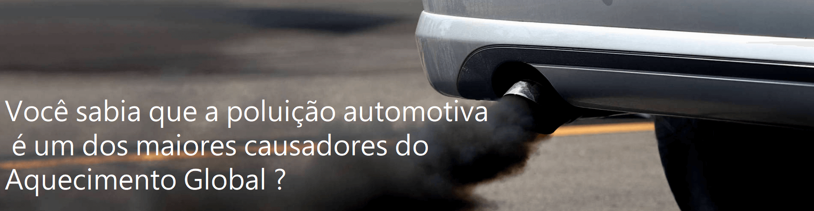
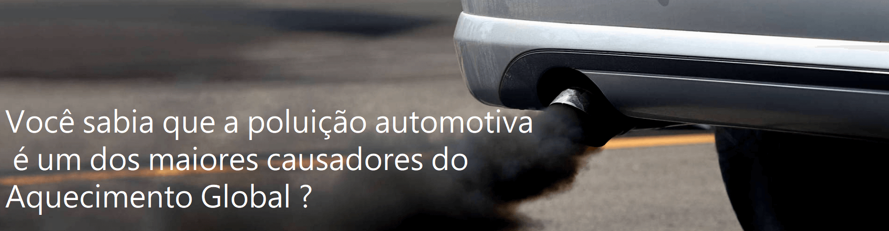

Como você já sabe, um motor em funcionamento queima combustível e tal combustão emite gases tóxicos que são lançados na atmosfera. Além disso, partículas minúsculas geradas pelo desgaste dos freios e pneus permanecem em suspensão no ar, podendo se espalhar por quase meio quilômetro ao longo das rodovias. Assim, a poluição automotiva não afeta apenas os habitantes de grandes centros urbanos. Quem vive próximo a estradas movimentadas também sofre as consequências dela. Seja um motorista consciente, aprenda a diminuir a poluição do seu carro e ajudar o meio ambiente com poucos passos, mas primeiro entenda quais são as consequências da poluição ao meio ambiente.
A principal consequência dos gases poluentes é o declínio da saúde. Problemas respiratórios e doenças mais graves, como o câncer, podem acontecer. Acidentes vasculares e problemas cardíacos também são ocasionados pela poluição atmosférica. As substâncias presentes na fumaça são as responsáveis por esses transtornos.
Os gases poluentes são as principais causas para a diminuição da camada de ozônio. Logo, eles provocam o aquecimento global e outros fenômenos, como chuvas ácidas. Também podem ocorrer mudanças na incidência de chuvas, aumento ou diminuição de temperaturas de maneira incomum. Portanto, esse é um problema que afeta a sociedade de maneira geral e precisa de medidas precisas para ser remediado.
Como já dissemos, o objetivo do nosso site não é convencer você a deixar de usar seu carro. O que queremos é mostrar que algumas mudanças de atitude contribuem, e muito, para evitar a poluição tão prejudicial à saúde e ao ambiente. Veja exemplos do que pode ser feito:
O óleo lubrificante e o filtro precisam ser trocados de acordo com as especificações e a periodicidade descritas no manual do proprietário. Caso contrário, o motor precisará consumir mais combustível para funcionar, emitindo mais poluentes. A troca dos filtros de ar e de combustível no período certo também é importante porque esses elementos contribuem para a pureza da composição ar + combustível que vai para o motor, melhorando sua eficiência energética.
É preciso calibrar os pneus com frequência, pois, quando estão murchos, diminuem o rendimento do veículo. Esses componentes também se desgastam com facilidade, mas saiba que andar com pneus carecas, além de perigoso, é ilegal. No entanto, uma troca dos quatros pneus pode ser cara. O ideal é calibrar os pneus a cada 15 dias quando você for abastecer, já que a maioria dos postos disponibiliza gratuitamente o calibrador.Sempre olhe o manual de instruções do seu veículo para saber qual é a quantidade apropriada de ar para cada pneu.
Por meio de um teste que irá detectar a qualidade dos gases que saem do escapamento, você saberá que atitudes podem e devem ser tomadas para diminuir essa emissão e garantir que seu carro esteja dentro das normas e apto a rodar livremente. Para impedir que seu carro tenha altos níveis de emissão de poluentes, o primeiro passo é garantir que seu motor esteja sempre calibrado e em dia com a manutenção. Fazer visitas periódicas ao mecânico pode ser uma obrigação cansativa ao possuir um carro antigo, mas muito necessária, assim como o investimento em peças essenciais para o bom funcionamento do automóvel.